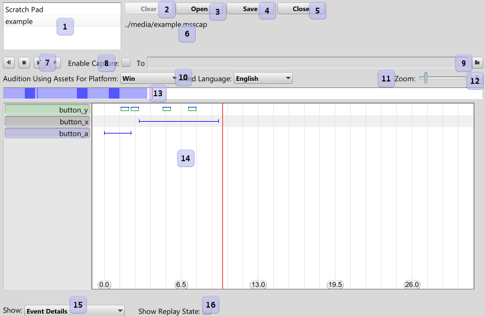
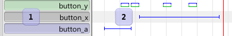
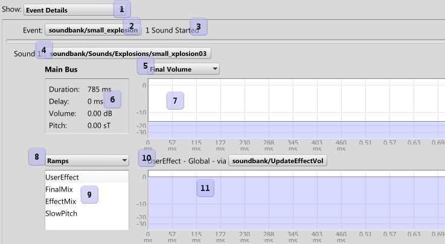
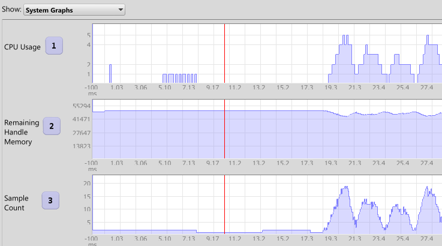

|
Timeline |
|
The timeline is where all event inspection and replay occurs.

- List of open captures. The scratch pad is always open.
- Clear the scratchpad to empty.
- Open a previously saved capture.
- Save the current capture to file.
- Close the opened capture.
- The selected capture's filename.
- Capture playback - Rewind, Stop, Play with new random values, Play with recorded random values.
- On/Off - Record ("Capture") the capture to a WAV file.
- Set the WAV file to record to.
- Choose the settings for the replay - this determines what assets to use if they have been specialized via Specialization.
- Zoom the timeline view in and out.
- Switch between normal and compact view.
- The scrub bar for the timeline. The darkness represents the density of events at that location. Looped sections will be tinted green. A glassy pane shows the currently visible section for long timelines.
- The timeline view.
- The type of details to show regarding the current capture.
- Whether to show the captured or replay state in the details and graphs.
Whenever you audition in the tool, the event will always show up on the Scratch Pad. Not everything can be captured, so you won't get System Graphs
for the scratch pad.

- The track listing of events. Green means only this event will play, purple means the event is muted, red is the event isn't loaded in the tool,
dark grey means the event is muted because another event is set to solo play.
- The event instances. A hollow square means the event played no sounds. A solid square means the
event played a sound, but it was too short to show at the current zoom. Otherwise, the blue line is the length of the sound, the green is the
length of the replay, if one exists.

- Whether to show event details (shown above), or the system graphs (shown below)
- The name of the selected event. Click to edit.
- The number of sounds started.
- A sound that was started. Click to edit.
- The select of source data for the current graph. Note that for events played in Miles Studio, the final volume includes any attenuation from the Master Volume in Miles Studio itself.
- The duration, as well as the results of the random volume, pitch, and delay. This does not take in to account
3d volume, ramps, or any other source of volume or pitch - only the sources from the Start Sound event step.
- The graph for the current selection. The data type is either decibel, semitones, hertz, or distance.
- Whether to show the current ramps or variables that affected this sound.
- The list of ramps or variables (based on above), by name.
- The name of the ramp/variable, whether it affected all sounds or just this sound, and what event caused it.
- The graph of the ramp/variable's value over the length of the sound instance.
Graphs show various values over time. These include system information, user ramps, and user variables.
These graphs line up with the timeline scrollbar.

- The CPU Usage graph. Given as a percent of total CPU time.
- The remaining handle memory. This is the memory that the event system uses for managing sounds. Sound data is not included in this.
- The number of playing samples.
More graphs are available than shown.
 Navigator
Navigator Miles Studio Reference
Miles Studio Reference Options
Options